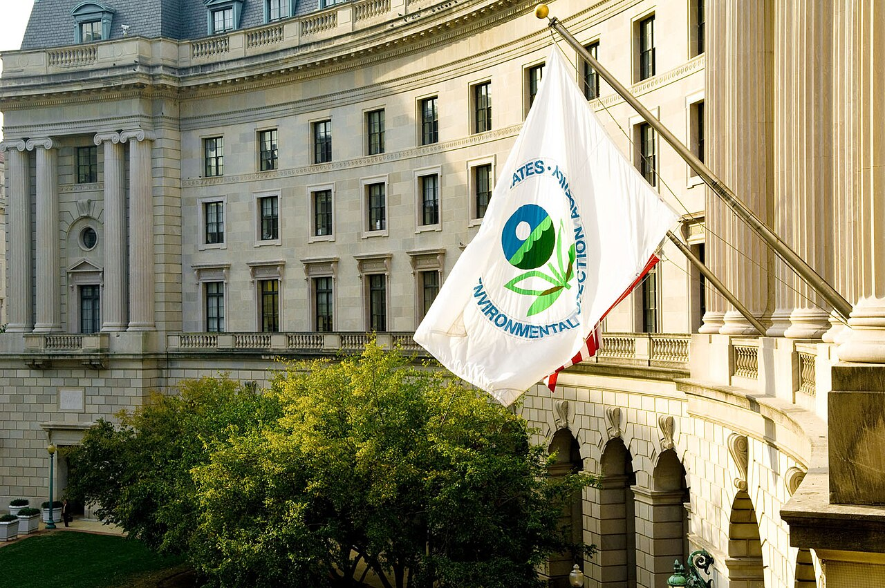

GRIEVANCE XXXVII ◆ MORAL OBLIGATION
He has cast aside protections for air, climate, and endangered life, leaving future generations to bear the risk.
THE RECORD SHOWS
The EPA revoked the 2009 greenhouse-gas endangerment finding and associated vehicle-emission standards as the administration pursued wider environmental rollbacks.

The agency’s February 2026 action withdrew a foundation of federal greenhouse-gas regulation for motor vehicles. It relied principally on a disputed reading of statutory authority, rather than a finalized finding that greenhouse gases are harmless. The administration argues that the rollback reduces regulatory burdens; opponents say it sacrifices public health and climate protections. Litigation and state-level regulation continue.
A DOCUMENTED SEQUENCE
3 MILESTONES- February 2026The EPA withdrew its 2009 endangerment finding for motor-vehicle greenhouse gases and rescinded vehicle emissions standards.
- May 2026Legal analysts described the direct scope of the reversal and noted continuing state regulation and litigation.
- September 2026Reuters chronicled parallel moves to weaken protections for threatened and endangered species.